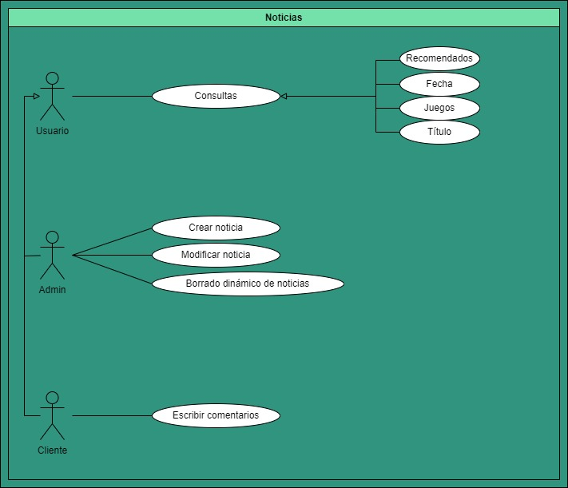
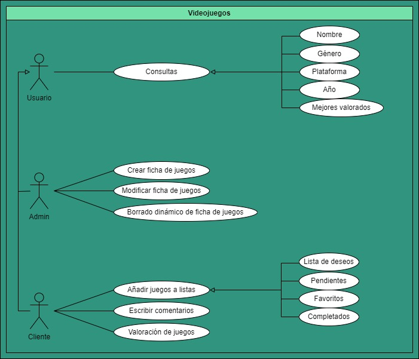
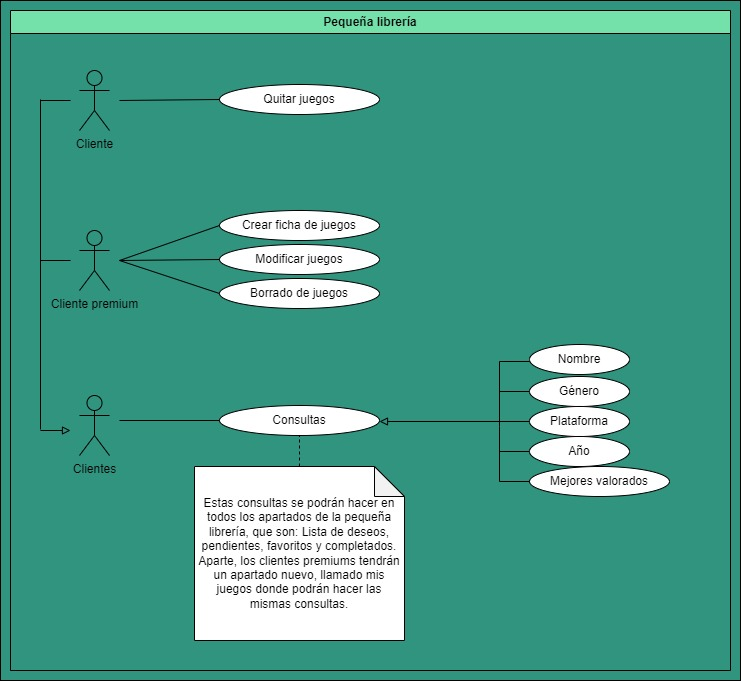
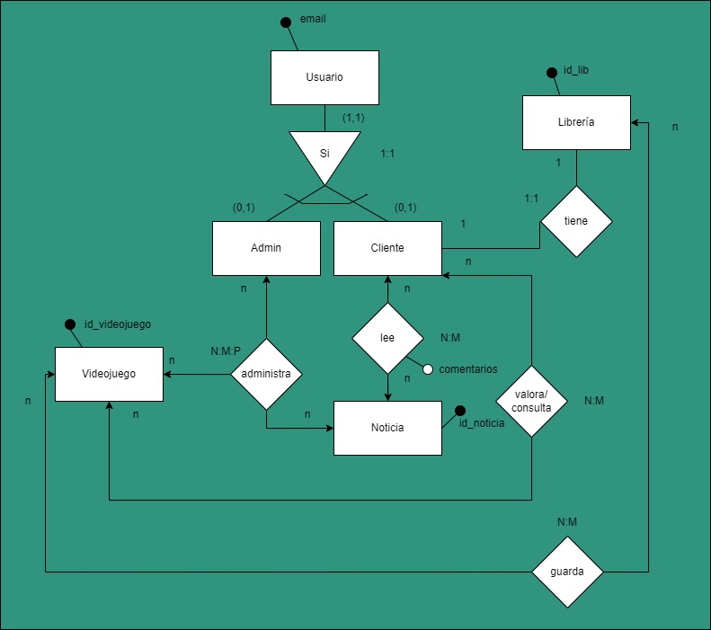
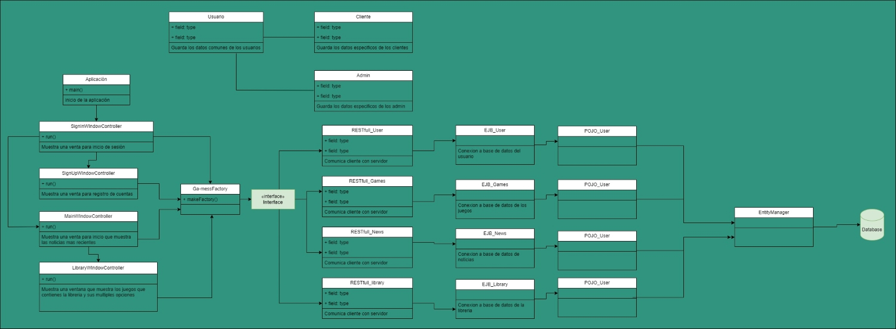

Con nuestra aplicación de noticias y gestión de videojuegos,
nos comprometemos a ofrecerte un acceso rápido y fácil a
las últimas noticias, reseñas y análisis del mundo de los
videojuegos. Nos esforzamos por mantener un coste económico
equilibrado, proporcionando contenido de calidad sin salirnos
del presupuesto. Además, nos comprometemos a cumplir un plazo
establecido para brindarte información oportuna y relevante,
siendo nuestra prioridad satisfacer las necesidades de los
usuarios y clientes, ofreciendo una experiencia única y
personalizada que se adapte a sus intereses y preferencias
Alcance del Sistema:
· Nuestra aplicación puede ser utilizada por cualquier persona pero
hemos pensado que solo vamos a traducirla a dos idiomas:
Castellano, que es el nuetro e Ingles, que es el universal.
Por lo qur queda fuera de nuestro alcance traducirla a más idiomas.
Identificación de Usuarios:
La aplicación tendrá tres tipos de usuario:
· El administrador contará con todas las opciones CRUD completas
en los apartados de noticias y videojuegos, lo que le permitirá
gestionar completamente el contenido en estas secciones. Sin
embargo, a diferencia de los usuarios regulares, el administrador
no dispondrá de una librería propia.
· El usuario normal tendrá acceso a la librería y podrá realizar
consultas exclusivamente en los dos apartados mencionados
anteriormente. Además, podrán interactuar en el chat dejando
comentarios, y tiene la opción de añadir juegos a favoritos,
a la lista de deseos y a otras categorías para organizar su
librería de manera personalizada.
· El usuario premium disfrutará de todas las funciones del usuario
normal, pero además contará con un beneficio adicional en su librería.
Este usuario tiene la capacidad de agregar sus propios juegos
en un apartado exclusivo, donde podrá crear fichas personalizadas
para cada juego. Estas fichas se integran de manera individual
en su biblioteca, permitiéndole gestionar y organizar sus juegos
de forma más detallada y personalizada.
Especificaciones de Casos de Uso (Con jerarquías)



Modelo Conceptual de Datos (Con cardinalidades)

Arquitectura de Software de la idea
